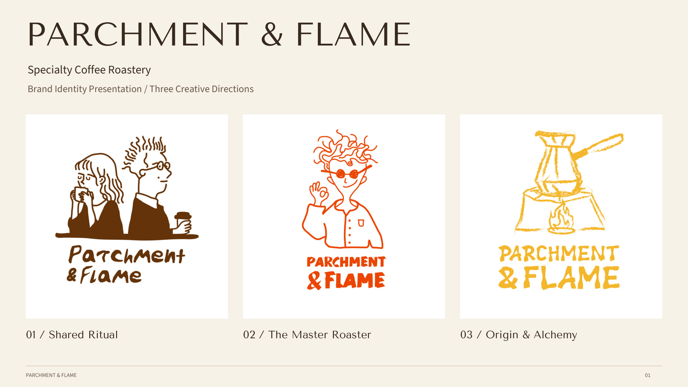
PARCHMENT & FLAME
Specialty Coffee Roastery
Brand Identity Presentation / Three Creative Directions

Specialty Coffee Roastery
Brand Identity Presentation / Three Creative Directions
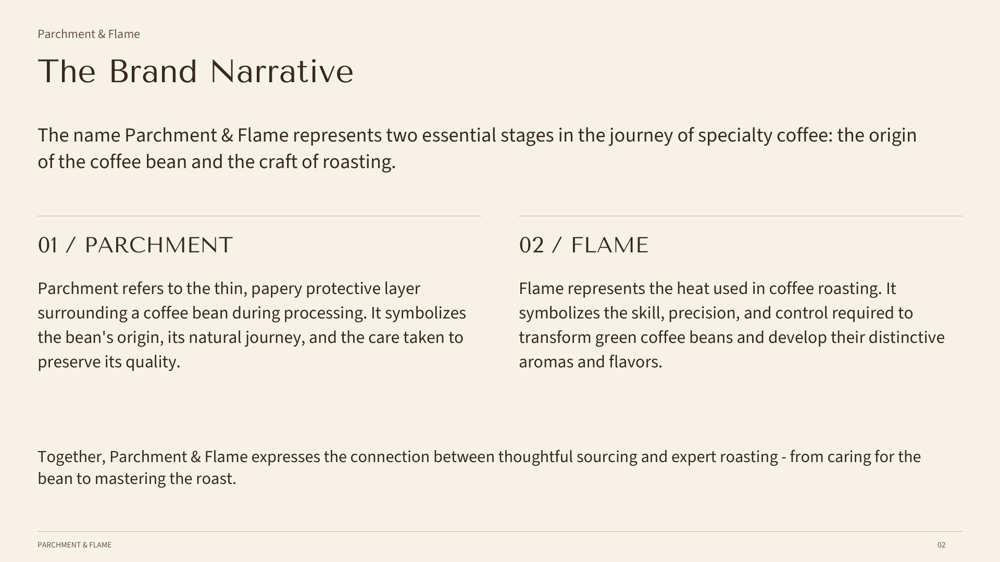
The name Parchment & Flame represents two essential stages in the journey of specialty coffee: the origin of the coffee bean and the craft of roasting.
Parchment refers to the thin, papery protective layer surrounding a coffee bean during processing. It symbolizes the bean's origin, its natural journey, and the care taken to preserve its quality.
Flame represents the heat used in coffee roasting. It symbolizes the skill, precision, and control required to transform green coffee beans and develop their distinctive aromas and flavors.
Together, Parchment & Flame expresses the connection between thoughtful sourcing and expert roasting - from caring for the bean to mastering the roast.
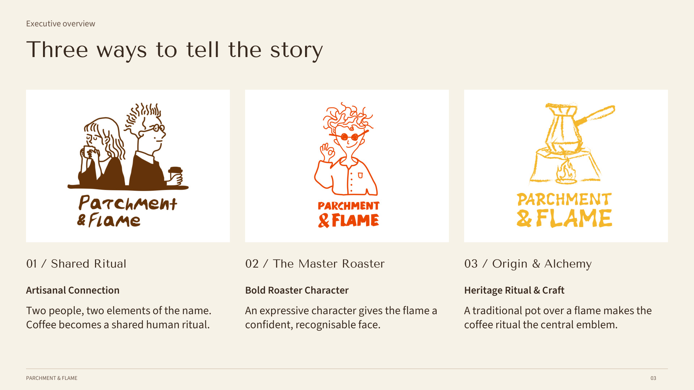
Two people, two elements of the name. Coffee becomes a shared human ritual.
An expressive character gives the flame a confident, recognisable face.
A traditional pot over a flame makes the coffee ritual the central emblem.
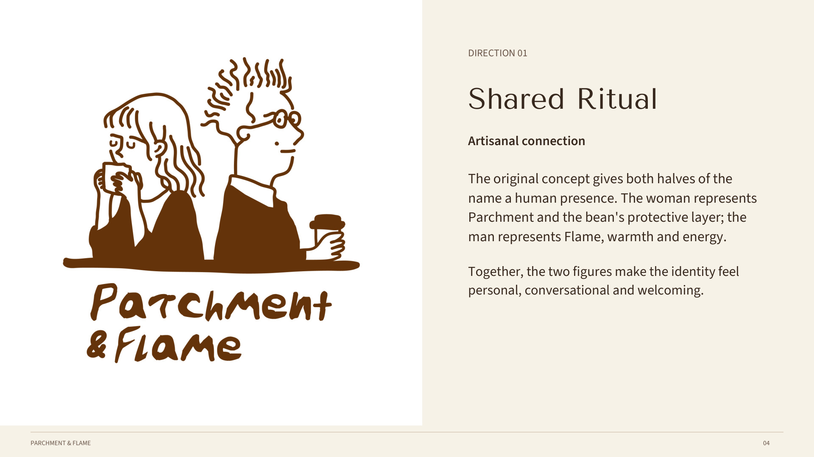
The original concept gives both halves of the name a human presence. The woman represents Parchment and the bean's protective layer; the man represents Flame, warmth and energy.
Together, the two figures make the identity feel personal, conversational and welcoming.
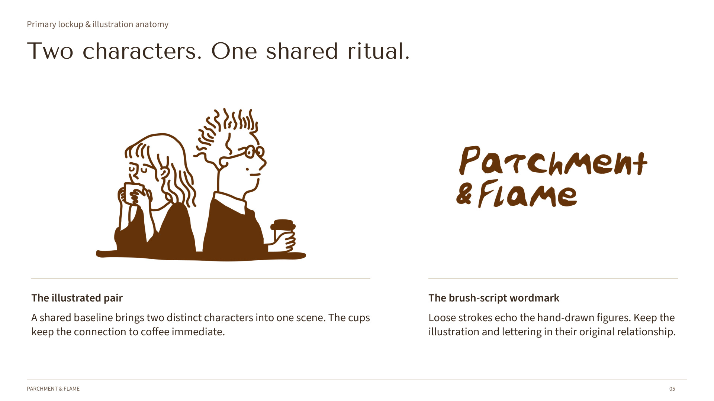
A shared baseline brings two distinct characters into one scene. The cups keep the connection to coffee immediate.
Loose strokes echo the hand-drawn figures. Keep the illustration and lettering in their original relationship.
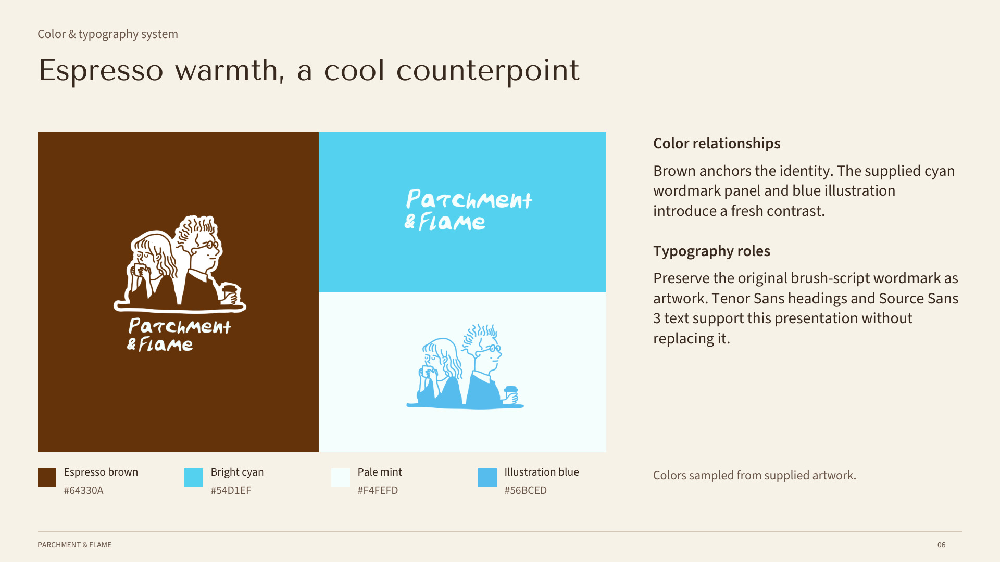
Brown anchors the identity. The supplied cyan wordmark panel and blue illustration introduce a fresh contrast.
Preserve the original brush-script wordmark as artwork. Tenor Sans headings and Source Sans 3 text support this presentation without replacing it.
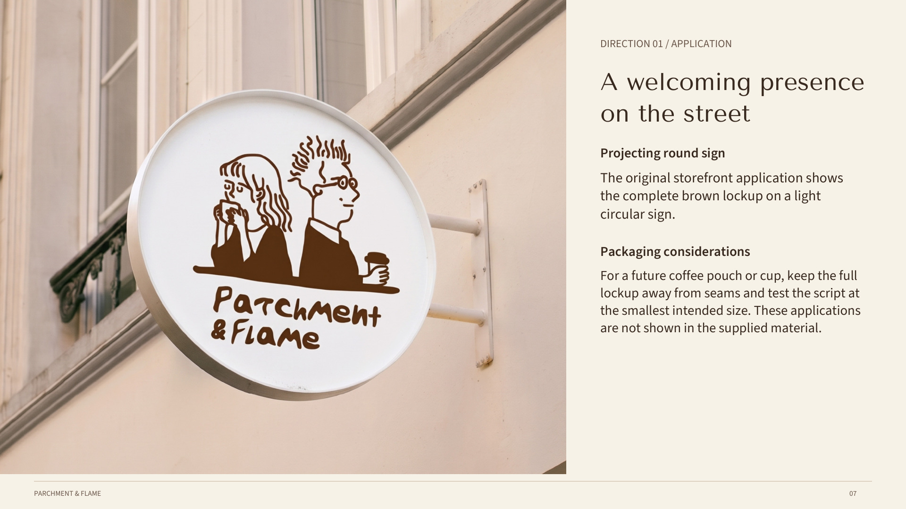
The original storefront application shows the complete brown lockup on a light circular sign.
For a future coffee pouch or cup, keep the full lockup away from seams and test the script at the smallest intended size. These applications are not shown in the supplied material.
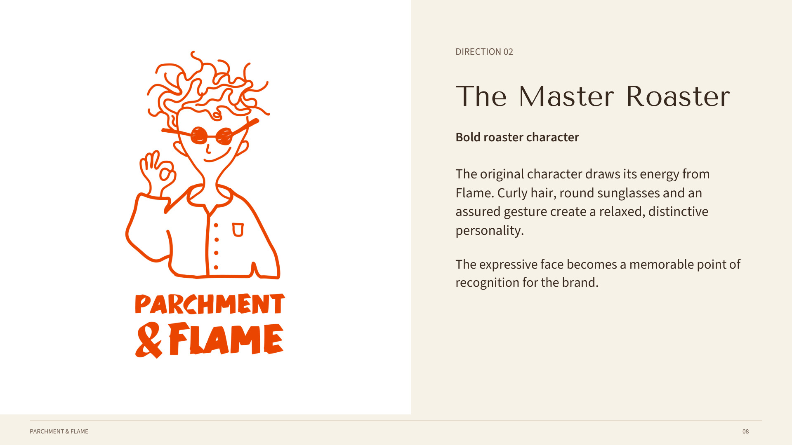
The original character draws its energy from Flame. Curly hair, round sunglasses and an assured gesture create a relaxed, distinctive personality.
The expressive face becomes a memorable point of recognition for the brand.
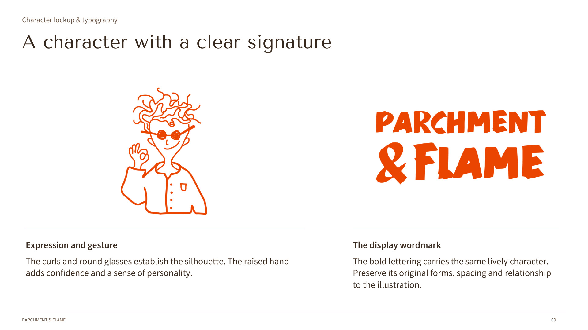
The curls and round glasses establish the silhouette. The raised hand adds confidence and a sense of personality.
The bold lettering carries the same lively character. Preserve its original forms, spacing and relationship to the illustration.
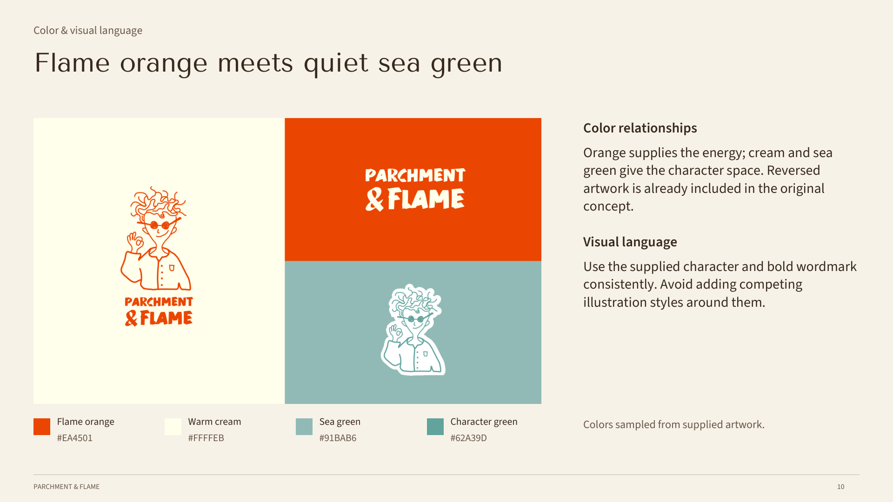
Orange supplies the energy; cream and sea green give the character space. Reversed artwork is already included in the original concept.
Use the supplied character and bold wordmark consistently. Avoid adding competing illustration styles around them.
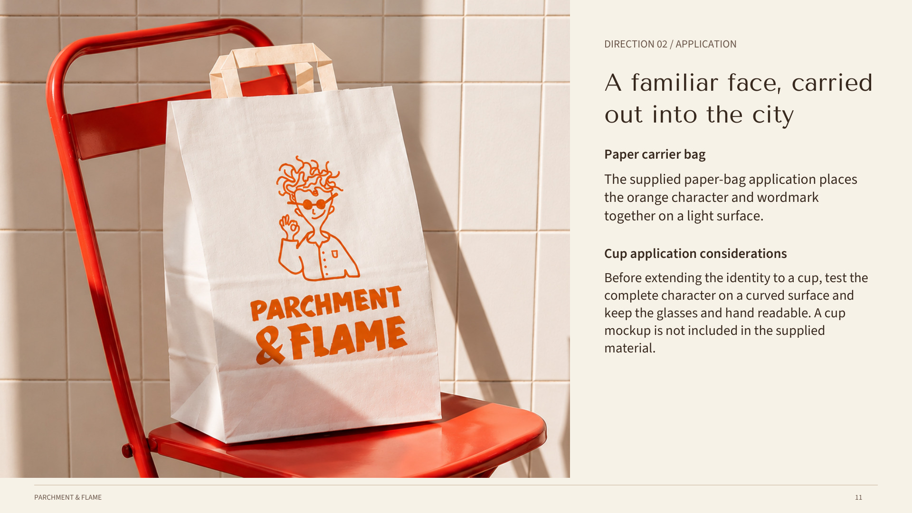
The supplied paper-bag application places the orange character and wordmark together on a light surface.
Before extending the identity to a cup, test the complete character on a curved surface and keep the glasses and hand readable. A cup mockup is not included in the supplied material.
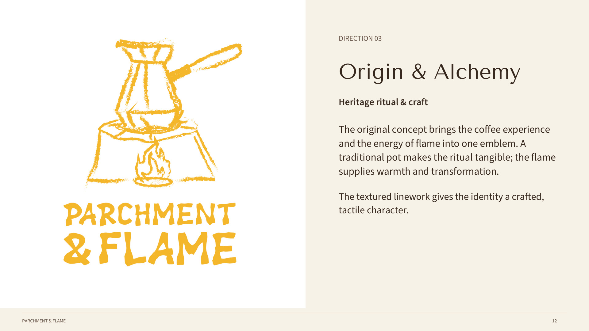
The original concept brings the coffee experience and the energy of flame into one emblem. A traditional pot makes the ritual tangible; the flame supplies warmth and transformation.
The textured linework gives the identity a crafted, tactile character.
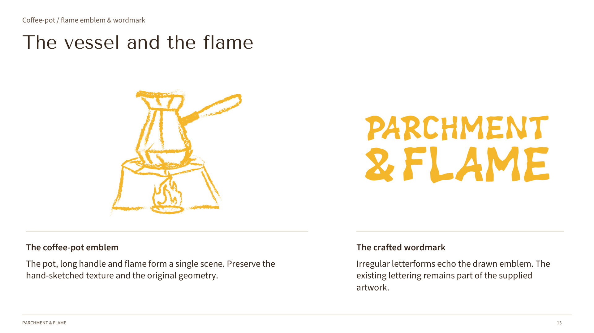
The pot, long handle and flame form a single scene. Preserve the hand-sketched texture and the original geometry.
Irregular letterforms echo the drawn emblem. The existing lettering remains part of the supplied artwork.
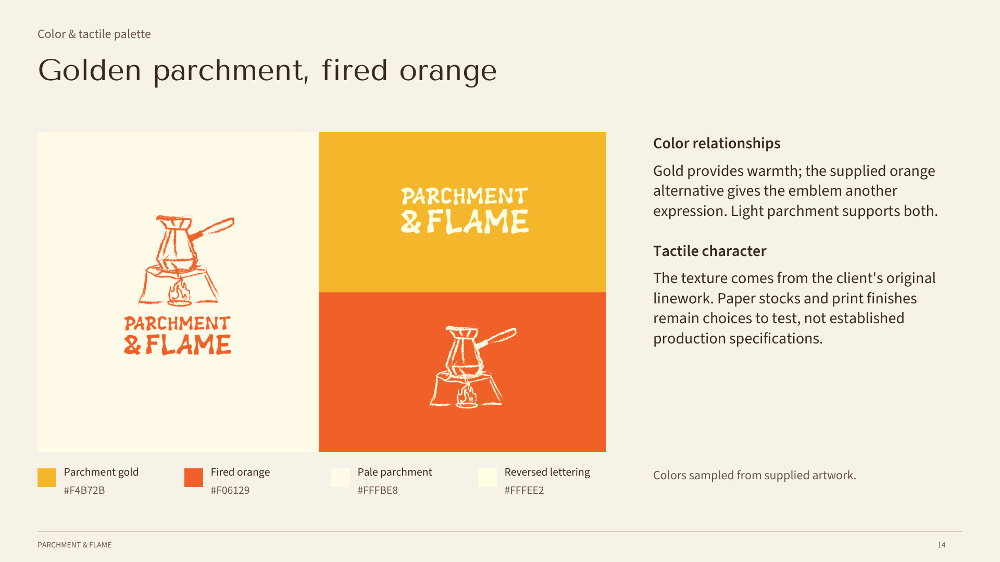
Gold provides warmth; the supplied orange alternative gives the emblem another expression. Light parchment supports both.
The texture comes from the client's original linework. Paper stocks and print finishes remain choices to test, not established production specifications.
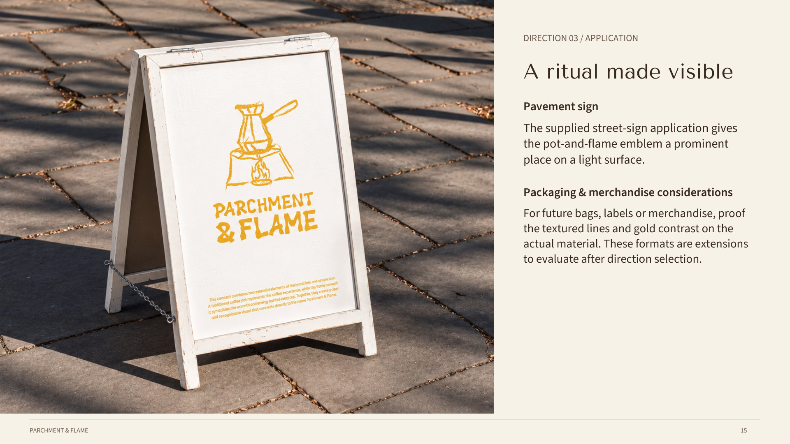
The supplied street-sign application gives the pot-and-flame emblem a prominent place on a light surface.
For future bags, labels or merchandise, proof the textured lines and gold contrast on the actual material. These formats are extensions to evaluate after direction selection.
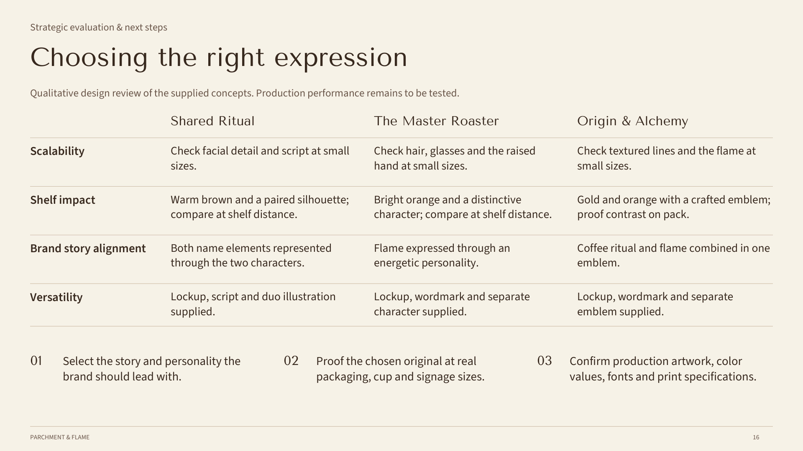
Qualitative design review of the supplied concepts. Production performance remains to be tested.
Scalability: Check facial detail and script at small sizes.
Shelf impact: Warm brown and a paired silhouette; compare at shelf distance.
Brand story alignment: Both name elements represented through the two characters.
Versatility: Lockup, script and duo illustration supplied.
Scalability: Check hair, glasses and the raised hand at small sizes.
Shelf impact: Bright orange and a distinctive character; compare at shelf distance.
Brand story alignment: Flame expressed through an energetic personality.
Versatility: Lockup, wordmark and separate character supplied.
Scalability: Check textured lines and the flame at small sizes.
Shelf impact: Gold and orange with a crafted emblem; proof contrast on pack.
Brand story alignment: Coffee ritual and flame combined in one emblem.
Versatility: Lockup, wordmark and separate emblem supplied.
PARCHMENT & FLAME
Use ← → to turn pages · Home / End to jump · F for full screen